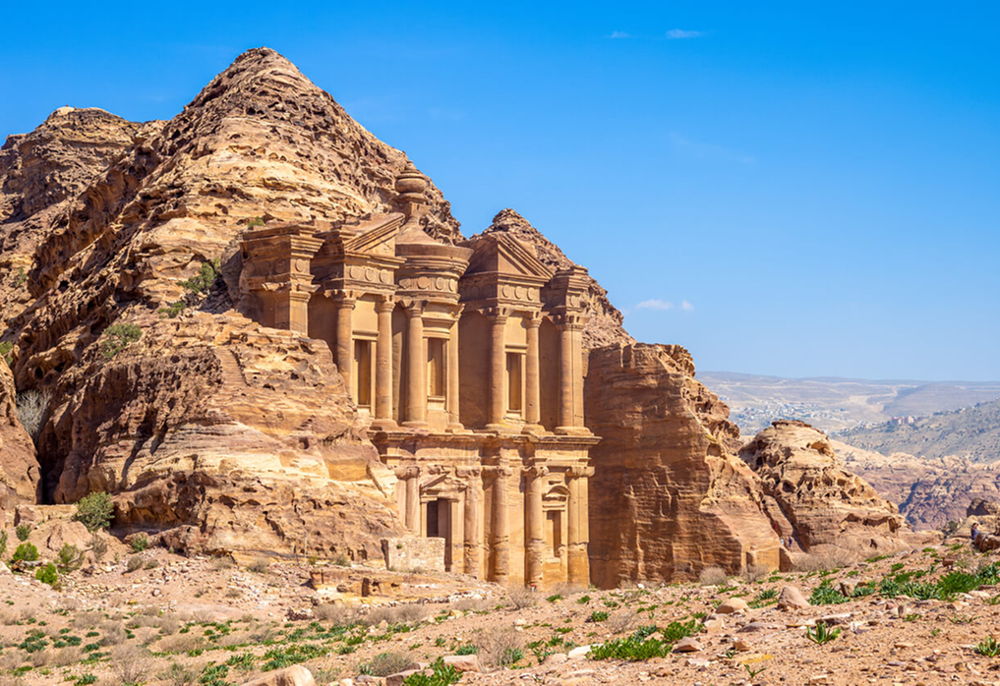
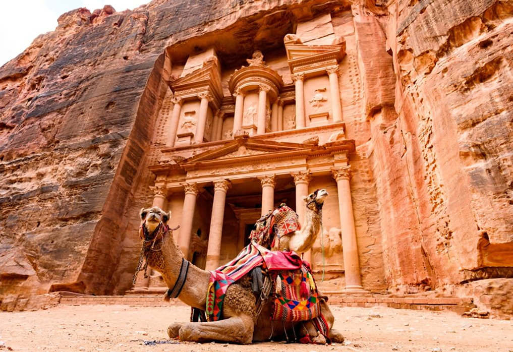
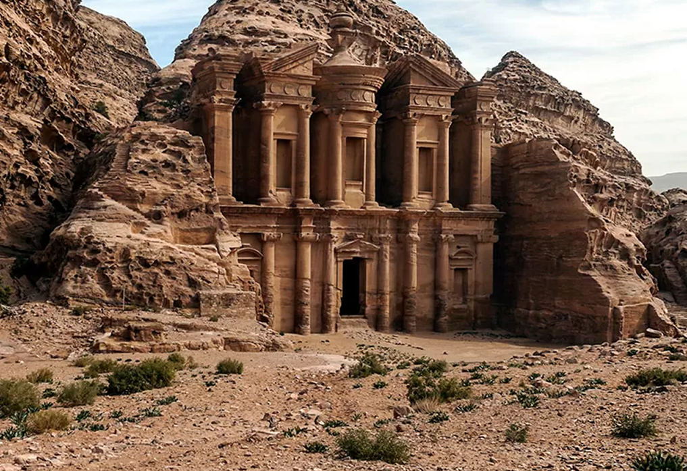

INFORMAÇÕES
Petra (do grego πέτρα, petra; árabe: البتراء, Al-Bitrā/Al-Batrā), originalmente conhecida pelos nabateus como Raqmu, é uma cidade histórica e arqueológica localizada no sul da Jordânia. A cidade é famosa por sua arquitetura esculpida em rocha e por seu sistema de canalização de água. Outro nome para Petra é Cidade Rosa, devido à cor das pedras do local.
  